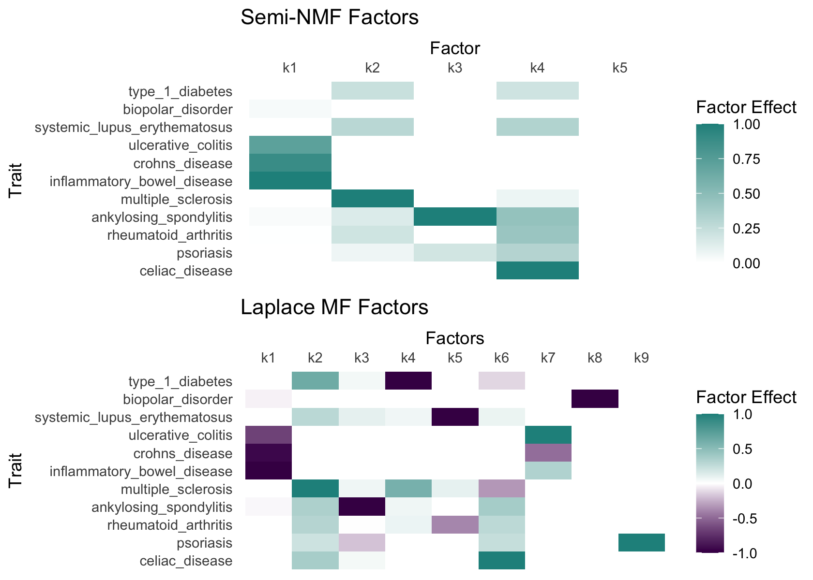

Last updated: 2025-06-09
Checks: 7 0
Knit directory: ebmf_immune/analysis/
This reproducible R Markdown analysis was created with workflowr (version 1.7.1). The Checks tab describes the reproducibility checks that were applied when the results were created. The Past versions tab lists the development history.
Great! Since the R Markdown file has been committed to the Git repository, you know the exact version of the code that produced these results.
Great job! The global environment was empty. Objects defined in the global environment can affect the analysis in your R Markdown file in unknown ways. For reproduciblity it’s best to always run the code in an empty environment.
The command set.seed(1) was run prior to running the
code in the R Markdown file. Setting a seed ensures that any results
that rely on randomness, e.g. subsampling or permutations, are
reproducible.
Great job! Recording the operating system, R version, and package versions is critical for reproducibility.
Nice! There were no cached chunks for this analysis, so you can be confident that you successfully produced the results during this run.
Great job! Using relative paths to the files within your workflowr project makes it easier to run your code on other machines.
Great! You are using Git for version control. Tracking code development and connecting the code version to the results is critical for reproducibility.
The results in this page were generated with repository version 3a315e9. See the Past versions tab to see a history of the changes made to the R Markdown and HTML files.
Note that you need to be careful to ensure that all relevant files for
the analysis have been committed to Git prior to generating the results
(you can use wflow_publish or
wflow_git_commit). workflowr only checks the R Markdown
file, but you know if there are other scripts or data files that it
depends on. Below is the status of the Git repository when the results
were generated:
Ignored files:
Ignored: .DS_Store
Ignored: .Rproj.user/
Note that any generated files, e.g. HTML, png, CSS, etc., are not included in this status report because it is ok for generated content to have uncommitted changes.
These are the previous versions of the repository in which changes were
made to the R Markdown
(analysis/autoimmune_factors_significant.Rmd) and HTML
(docs/autoimmune_factors_significant.html) files. If you’ve
configured a remote Git repository (see ?wflow_git_remote),
click on the hyperlinks in the table below to view the files as they
were in that past version.
| File | Version | Author | Date | Message |
|---|---|---|---|---|
| html | 9fba759 | zq2209 | 2025-06-09 | update |
| Rmd | 0c8ed18 | zq2209 | 2025-06-09 | update |
| Rmd | 260a782 | “John | 2025-06-08 | update analysis on significant signals |
This analysis processes genome-wide association study (GWAS) data for multiple autoimmune diseases obtained from the GWAS Catalog. The goal is to prepare the data for subsequent analyses by:
The complete list of autoimmune diseases included can be found here.
First, we load required packages and set knitr options:
# Load required packages
library(tidyverse) # For data manipulation and visualization
library(data.table) # For efficient data reading and processing
library(pheatmap)
library(forestplot)
library(png)
library(grid)
library(gridExtra)
# Data manipulation and visualization
library(tidyverse)
library(reshape2)
library(cowplot)
library(viridis)
# Matrix factorization tools
library(flashier)
library(fastTopics)
This step is to find genetic variants that are present in all GWAS studies to enable cross-study comparisons.
# List all GWAS data files
files <- list.files(
path = "~/Desktop/autoimmune_gwas",
pattern = "\\.h\\.tsv$", # Regex to match ".h.tsv" at the end
full.names = TRUE # Return full paths
)
# Initialize with variants from first file
#common_variants <- fread(files[1], select = "variant_id")[[1]]
# Initialize lists to store results
results_list <- list()
duplicate_report <- list()
significant_variants_list <- list()
for (file in files[c(-2, -10, -13, -14)]) {
# Read relevant columns
gwas_data <- fread(file, select = c("variant_id", "beta", "standard_error"))
# Filter to common variants and compute Z-scores
filtered_data <- gwas_data %>%
#filter(variant_id %in% common_variants) %>%
mutate(
source = gsub("/Users/zqi/Desktop/autoimmune_gwas/|\\.h\\.tsv$", "", file),
z_hat = beta / standard_error
)
# Identify and report duplicates
dup_variants <- filtered_data$variant_id[duplicated(filtered_data$variant_id)]
if(length(dup_variants) > 0) {
duplicate_report[[file]] <- data.table(
file = file,
variant_id = unique(dup_variants),
n_duplicates = table(filtered_data$variant_id)[unique(dup_variants)]
)
}
# Keep only first occurrence of each variant
results_list[[file]] <- filtered_data[!duplicated(filtered_data$variant_id), ]
# Select significant variants (|Z-score| > 1.96 for p < 0.05)
significant_variants <- filtered_data %>%
filter(abs(z_hat) > 0.5) %>% # Change threshold as needed
select(variant_id, beta, standard_error, z_hat) %>%
mutate(source = gsub("/Users/zqi/Desktop/autoimmune_gwas/|\\.h\\.tsv$", "", file))
significant_variants_list[[file]] <- significant_variants
}
# Combine all studies
combined_results <- bind_rows(results_list)
# Combine all significant variants
significant_variants_df <- bind_rows(significant_variants_list)Final number of overlapping variants are over 18000. Two traits were dropped because the overlapping of these two traits will be too low.
Then, replace study identifiers with meaningful disease names for clearer interpretation.
# Create study-to-disease mapping
study_to_disease <- data.frame(
source = c("20190752-GCST000612-EFO_0001060",
"23749187-GCST005529-EFO_0003898",
"26192919-GCST003044-EFO_0000384",
"27329760-GCST003724-EFO_0000289",
"23143594-GCST005527-EFO_0000676",
"24076602-GCST005531-EFO_0003885",
"26192919-GCST003045-EFO_0000729",
"33830302-GCST90000529-EFO_0001359",
"23143596-GCST005569-EFO_0000685",
"26192919-GCST003043-EFO_0003767",
"26502338-GCST003156-EFO_0002690"),
disease = c("celiac_disease",
"ankylosing_spondylitis",
"crohns_disease",
"biopolar_disorder",
"psoriasis",
"multiple_sclerosis",
"ulcerative_colitis",
"type_1_diabetes",
"rheumatoid_arthritis",
"inflammatory_bowel_disease",
"systemic_lupus_erythematosus")
)
# Merge mapping with results
significant_variants_df <- merge(significant_variants_df, study_to_disease, by = "source", all.x = TRUE)
# Save processed data
save(significant_variants_df, file = '../data/autoimmune_significant_variants.RData')This step is to reshape data into variant-by-disease matrices for downstream analysis.
load('../data/autoimmune_significant_variants.RData')
# significant_variants_df <- combined_results %>%
# filter(abs(z_hat) > 0)significant_variants_dedup <- significant_variants_df |>
distinct(variant_id, disease, .keep_all = TRUE) # Keeps first duplicate
# Create variant-by-disease beta matrix
beta_matrix <- significant_variants_df %>%
pivot_wider(
id_cols = variant_id,
names_from = disease,
values_from = beta,
values_fill = NA
) %>%
as.data.frame() %>%
column_to_rownames("variant_id")
z_matrix <- significant_variants_df %>%
pivot_wider(
id_cols = variant_id,
names_from = disease, # Changed from 'disease' to 'source' to match your previous code
values_from = z_hat,
values_fill = NA # This explicitly fills missing combinations with NA
) %>%
as.data.frame() %>%
column_to_rownames("variant_id")
# Save in multiple formats
#save(beta_matrix, file = "beta_matrix.RData")
#fwrite(beta_matrix, row.names = TRUE, file = "beta_matrix.csv")Factorize the effect size matrix into latent factors using semi-NMF, which allows for capturing only same direction of the disease mechanism.
load('../data/z_matrix.RData')
Y <- as.matrix(z_matrix)# Calculate trait-specific variances
var_per_trait <- apply(Y, 2, var, na.rm = TRUE)
s1 <- 0.1 * min(var_per_trait, na.rm = TRUE) # Set minimum variance threshold
# Initialize timing
timings <- list()
# Run semi-NMF
t0 <- proc.time()
fl0 <- flash(Y,
ebnm_fn = c(ebnm_point_laplace, ebnm_point_exponential),
var_type = 0,
greedy_Kmax = 40,
nullcheck = FALSE,
backfit = FALSE,
verbose = 3)
# Refine with proper variance structure
fl_snmf <- flash_init(Y, var_type = 2, S = s1)
fl_snmf <- flash_factors_init(fl_snmf, fl0,
ebnm_fn = c(ebnm_point_laplace, ebnm_point_exponential))
fl_snmf <- flash_backfit(fl_snmf, extrapolate = FALSE, maxiter = 100, verbose = 3)
fl_snmf <- flash_backfit(fl_snmf, extrapolate = TRUE, maxiter = 100, verbose = 3)
t1 <- proc.time()
# Record timing
timings$fl_snmf <- t1 - t0
print(timings$fl_snmf)
# user system elapsed
# 32.144 2.479 35.119 Decompose the matrix using Laplace priors for both loadings and factors, which encourages capturing both positive and negative direction of the disease mechanism.
t0 <- proc.time()
fl0_mf <- flash(Y,
ebnm_fn = c(ebnm_point_laplace, ebnm_point_laplace),
var_type = 0,
greedy_Kmax = 40,
nullcheck = FALSE,
backfit = FALSE,
verbose = 3)
# Refine with proper variance structure
fl_mf <- flash_init(Y, var_type = 2, S = s1)
fl_mf <- flash_factors_init(fl_mf, fl0_mf,
ebnm_fn = c(ebnm_point_laplace, ebnm_point_laplace))
fl_mf <- flash_backfit(fl_mf, extrapolate = FALSE, maxiter = 100, verbose = 3)
fl_mf <- flash_backfit(fl_mf, extrapolate = TRUE, maxiter = 100, verbose = 3)
t1 <- proc.time()
# Record timing
timings$fl_mf <- t1 - t0
print(timings$fl_mf)
# user system elapsed
# 131.145 9.444 142.150 Save the factor loadings for downstream analysis.
# Extract and save factor loadings
fl_mf_ldf <- ldf(fl_mf, type = "i")
fl_snmf_ldf <- ldf(fl_snmf, type = "i")
save(fl_snmf_ldf, file = "../output/immune_snmf_factors_sig.RData")
save(fl_mf_ldf, file = "../output/immune_mf_factors_sig.RData")load("../output/immune_snmf_factors_sig.RData")
L <- fl_snmf_ldf$L
colnames(L) <- c(paste0('k', 1:ncol(L)))
L_df <- as.data.frame(L) %>%
rownames_to_column("variant_id") %>%
pivot_longer(cols = -variant_id,
names_to = "factor",
values_to = "loading")
# Get top variants per factor
top_variants_snmf <- L_df %>%
group_by(factor) %>%
arrange(desc(abs(loading))) %>%
slice_head(n = 1) %>% # Top 5 variants per factor
ungroup()
load("../output/immune_mf_factors_sig.RData")
L <- fl_mf_ldf$L
colnames(L) <- c(paste0('k', 1:ncol(L)))
L_df <- as.data.frame(L) %>%
rownames_to_column("variant_id") %>%
pivot_longer(cols = -variant_id,
names_to = "factor",
values_to = "loading")
top_variants_mf <- L_df %>%
group_by(factor) %>%
arrange(desc(abs(loading))) %>%
slice_head(n = 1) %>% # Top 5 variants per factor
ungroup()Visualization showing factor effects across traits by heatmap.
source('../code/plot_factors.R')
# Plot semi-NMF factors
F_snmf <- fl_snmf_ldf$F
p_snmf <- plot_factors(F_snmf, row_names = rownames(F_snmf),
col_names = paste0("k", 1:ncol(F_snmf))) +
scale_fill_gradient2(low = viridis(3)[1],
high = viridis(3)[2],
name = "Factor Effect") +
xlab("Factor") +
ggtitle("Semi-NMF Factors") +
scale_x_discrete(position = "top") +
theme(axis.text.x = element_text(angle = 0),
panel.background = element_rect(fill = "white"),
axis.ticks = element_blank())
# Scale for fill is already present.
# Adding another scale for fill, which will replace the existing scale.
# Plot Laplace MF factors
F_mf <- fl_mf_ldf$F
p_mf <- plot_factors(F_mf, row_names = rownames(F_mf),
col_names = paste0("k", 1:ncol(F_mf))) +
scale_fill_gradient2(low = viridis(3)[1],
high = viridis(3)[2],
name = "Factor Effect") +
xlab("Factors") +
ggtitle("Laplace MF Factors") +
scale_x_discrete(position = "top") +
theme(axis.text.x = element_text(angle = 0),
panel.background = element_rect(fill = "white"),
axis.ticks = element_blank())
# Scale for fill is already present.
# Adding another scale for fill, which will replace the existing scale.
# Combine plots
plot_grid(p_snmf, p_mf, nrow = 2, ncol = 1)
| Version | Author | Date |
|---|---|---|
| 9fba759 | zq2209 | 2025-06-09 |
Extract high loading variants for each loadings
L <- fl_mf_ldf$L
colnames(L) <- c(paste0('k', 1:ncol(L)))
L_df <- as.data.frame(L) %>%
rownames_to_column("variant_id") %>%
pivot_longer(cols = -variant_id,
names_to = "factor",
values_to = "loading")
merged_data <- combined_results %>%
inner_join(L_df, by = "variant_id")
# Get top 5 variants per factor
top_variants <- L_df %>%
group_by(factor) %>%
arrange(desc(abs(loading))) %>%
slice(1:5) %>% # Top 5 variants per factor
ungroup()
# Merge with effect data
plot_data <- combined_results %>%
inner_join(top_variants, by = "variant_id") %>%
mutate(
ci_low = beta - 1.96 * standard_error,
ci_high = beta + 1.96 * standard_error,
# Label for the variant (shows loading value)
variant_label = paste0(variant_id, " (λ=", round(loading, 2), ")")
)plot_single_variant <- function(variant_data) {
# Prepare labels
label_text <- cbind(
c("Trait", variant_data$disease),
c("Effect [95% CI]",
sprintf("%.2f [%.2f, %.2f]",
variant_data$beta,
variant_data$ci_low,
variant_data$ci_high))
)
forestplot(
labeltext = label_text,
mean = c(NA, variant_data$beta),
lower = c(NA, variant_data$ci_low),
upper = c(NA, variant_data$ci_high),
title = paste("Variant:", variant_data$variant_label[1],
"\nFactor:", variant_data$factor[1]),
xticks = seq(round(min(variant_data$ci_low))-0.1, round(max(variant_data$ci_high))+0.1, 0.05),
boxsize = 0.2,
lineheight = unit(0.8, "cm"),
col = fpColors(box = "royalblue", line = "darkblue", summary = "royalblue"),
graphwidth = unit(6, "cm"),
clip = c(-1, 1) # Force consistent x-axis limits
)
}
nested_plots <- plot_data %>%
group_by(factor, variant_id) %>%
group_split()
plot_single_variant(nested_plots[[1]])
all_plots <- map(nested_plots, plot_single_variant)
walk2(all_plots, nested_plots, ~{
factor_dir <- file.path("../output/forest_plots/significant_signals/mf/", unique(.y$factor))
if (!dir.exists(factor_dir)) dir.create(factor_dir, recursive = TRUE)
png(file.path(factor_dir, paste0(unique(.y$variant_id), ".png")),
width = 1200, height = 800, res = 150)
print(.x)
dev.off()
})# Get path of all png files
snmf_png_files <- file.path("..", "output", "forest_plots", "significant_signals", "snmf",
top_variants_snmf$factor,
paste0(top_variants_snmf$variant_id, ".png"))
# Read images into a list
# Load PNGs as raster objects
plots <- lapply(snmf_png_files, function(x) {
img <- readPNG(x)
rasterGrob(img, interpolate = TRUE)
})
# Arrange in a grid (e.g., 4x2)
grid.arrange(grobs = plots, ncol = 2)
| Version | Author | Date |
|---|---|---|
| 9fba759 | zq2209 | 2025-06-09 |
# Get path of all png files
mf_png_files <- file.path("..", "output", "forest_plots", "significant_signals", "mf",
top_variants_mf$factor,
paste0(top_variants_mf$variant_id, ".png"))
# Read images into a list
# Load PNGs as raster objects
plots <- lapply(mf_png_files, function(x) {
img <- readPNG(x)
rasterGrob(img, interpolate = TRUE)
})
# Arrange in a grid (e.g., 4x2)
grid.arrange(grobs = plots, ncol = 2)
| Version | Author | Date |
|---|---|---|
| 9fba759 | zq2209 | 2025-06-09 |
sessionInfo()
# R version 4.4.3 (2025-02-28)
# Platform: aarch64-apple-darwin20
# Running under: macOS Sequoia 15.5
#
# Matrix products: default
# BLAS: /Library/Frameworks/R.framework/Versions/4.4-arm64/Resources/lib/libRblas.0.dylib
# LAPACK: /Library/Frameworks/R.framework/Versions/4.4-arm64/Resources/lib/libRlapack.dylib; LAPACK version 3.12.0
#
# locale:
# [1] en_US.UTF-8/en_US.UTF-8/en_US.UTF-8/C/en_US.UTF-8/en_US.UTF-8
#
# time zone: America/Chicago
# tzcode source: internal
#
# attached base packages:
# [1] grid stats graphics grDevices utils datasets methods
# [8] base
#
# other attached packages:
# [1] fastTopics_0.6-192 flashier_1.0.56 ebnm_1.1-34 viridis_0.6.5
# [5] viridisLite_0.4.2 cowplot_1.1.3 reshape2_1.4.4 gridExtra_2.3
# [9] png_0.1-8 forestplot_3.1.6 abind_1.4-8 checkmate_2.3.2
# [13] pheatmap_1.0.12 data.table_1.17.4 lubridate_1.9.4 forcats_1.0.0
# [17] stringr_1.5.1 dplyr_1.1.4 purrr_1.0.4 readr_2.1.5
# [21] tidyr_1.3.1 tibble_3.2.1 ggplot2_3.5.2 tidyverse_2.0.0
#
# loaded via a namespace (and not attached):
# [1] tidyselect_1.2.1 farver_2.1.2 lazyeval_0.2.2
# [4] fastmap_1.2.0 promises_1.3.3 digest_0.6.37
# [7] timechange_0.3.0 lifecycle_1.0.4 invgamma_1.1
# [10] magrittr_2.0.3 compiler_4.4.3 progress_1.2.3
# [13] rlang_1.1.6 sass_0.4.10 tools_4.4.3
# [16] yaml_2.3.10 knitr_1.50 labeling_0.4.3
# [19] prettyunits_1.2.0 htmlwidgets_1.6.4 scatterplot3d_0.3-44
# [22] plyr_1.8.9 RColorBrewer_1.1-3 Rtsne_0.17
# [25] workflowr_1.7.1 withr_3.0.2 git2r_0.36.2
# [28] colorspace_2.1-1 scales_1.4.0 gtools_3.9.5
# [31] cli_3.6.5 crayon_1.5.3 rmarkdown_2.29
# [34] generics_0.1.4 RcppParallel_5.1.10 rstudioapi_0.17.1
# [37] httr_1.4.7 tzdb_0.5.0 pbapply_1.7-2
# [40] cachem_1.1.0 splines_4.4.3 parallel_4.4.3
# [43] softImpute_1.4-3 vctrs_0.6.5 Matrix_1.7-3
# [46] jsonlite_2.0.0 hms_1.1.3 mixsqp_0.3-54
# [49] ggrepel_0.9.6 irlba_2.3.5.1 horseshoe_0.2.0
# [52] trust_0.1-8 plotly_4.10.4 jquerylib_0.1.4
# [55] glue_1.8.0 uwot_0.2.3 stringi_1.8.7
# [58] Polychrome_1.5.4 gtable_0.3.6 later_1.4.2
# [61] quadprog_1.5-8 pillar_1.10.2 htmltools_0.5.8.1
# [64] truncnorm_1.0-9 R6_2.6.1 rprojroot_2.0.4
# [67] evaluate_1.0.3 lattice_0.22-7 backports_1.5.0
# [70] RhpcBLASctl_0.23-42 SQUAREM_2021.1 ashr_2.2-63
# [73] httpuv_1.6.16 bslib_0.9.0 Rcpp_1.0.14
# [76] deconvolveR_1.2-1 whisker_0.4.1 xfun_0.52
# [79] fs_1.6.6 pkgconfig_2.0.3